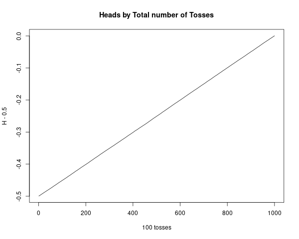
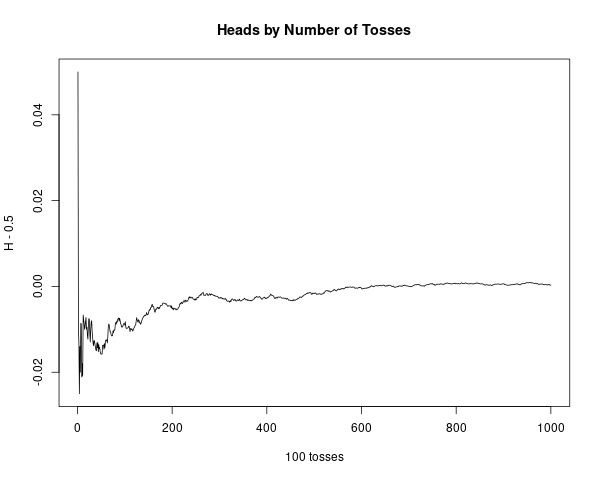

Chapter 1 - Discrete Probability Distributions
1.1 Simulation of Discrete Probabilities
Results and Examples
Exercise 1
Modify the program CoinTosses to toss a coin n times and print out after
every 100 tosses the proportion of heads minus 1/2. Do these numbers appear
to approach 0 as n increases? Modify the program again to print out, every
100 times, both of the following quantities: the proportion of heads minus 1/2,
and the number of heads minus half the number of tosses. Do these numbers
appear to approach 0 as n increases?
Answer
Simulated 100.000 coin tosses. The first case has a very clear trend towards 0. The second case
converges to 0, just a bit more randomly.
Code:
cointToss <- function(nToss) {
tosses = sample(c(0,1), size=nToss, replace = TRUE)
return(tosses)
}
PropHeads <- function(tosses) {
propHeads = cumsum(tosses)
numberOfHundreds = floor(length(tosses)/100)
retVal = rep(0, numberOfHundreds)
for (k in 1:numberOfHundreds) {
print(propHeads[100*k]/length(tosses) - 0.5)
retVal[k] = propHeads[100*k]/length(tosses) - 0.5
}
return(retVal)
}
PropHeadsByTosses <- function(tosses) {
propHeads = cumsum(tosses)
numberOfHundreds = floor(length(tosses)/100)
retVal = rep(0, numberOfHundreds)
for (k in 1:numberOfHundreds) {
print(propHeads[100*k]/(100*k) - 0.5)
retVal[k] = propHeads[100*k]/(100*k) - 0.5
}
return(retVal)
}
numbeOfTosses = 100*1000
simulatedTosses = cointToss(numbeOfTosses)
t1 = PropHeads(simulatedTosses)
t2 = PropHeadsByTosses(simulatedTosses)
plot(1:length(t1), t1, type="l",
main="Heads by Total number of Tosses",
xlab="100 tosses", ylab="H - 0.5")
plot(1:length(t2), t2, type="l",
main="Heads by Number of Tosses",
xlab="100 tosses", ylab="H - 0.5")
png(filename="~/GITHUB/CoveredInChocolate.github.io/IntroProb/img/01.01_Ex01_01.png", width = 600, height = 480)
plot(1:length(t1), t1, type="l",
main="Heads by Total number of Tosses",
xlab="100 tosses", ylab="H - 0.5")
dev.off()
png(filename="~/GITHUB/CoveredInChocolate.github.io/IntroProb/img/01.01_Ex01_02.png", width = 600, height = 480)
plot(1:length(t2), t2, type="l",
main="Heads by Number of Tosses",
xlab="100 tosses", ylab="H - 0.5")
dev.off()
Plots:


■
Exercise 2
Modify the program CoinTosses so that it tosses a coin n times and records
whether or not the proportion of heads is within 0.1 of 0.5 (i.e., between 0.4
and .06). Have your program repeat this experiment 100 times. About how
large must n be so that approximately 95 out of 100 times the proportion of
heads is between 0.4 and 0.6?
Answer
Based on repeated simulations, it seems like the proportion is consistently within 0.4 and 0.6
when $n = 100$, and maybe a little above, such as $n=110$ or $n=120$.
Code:
coinToss <- function(nToss) {
tosses = sample(c(0,1), size=nToss, replace = TRUE)
return(tosses)
}
NSIM = 120
propVector = rep(0, 100)
for (k in 1:100) {
tosses = coinToss(NSIM)
propVector[k] = mean(tosses)
}
print(sum(propVector > 0.4 & propVector < 0.6)/length(propVector))
■
Exercise 3
In the early 1600s, Galileo was asked to explain the fact that, although the
number of triples of integers from 1 to 6 with sum 9 is the same as the number
of such triples with sum 10, when three dice are rolled, a 9 seemed to come
up less often than a 10—supposedly in the experience of gamblers.
(a) Write a program to simulate the roll of three dice a large number of
times and keep track of the proportion of times that the sum is 9 and
the proportion of times it is 10.
Answer
Code
NSIM = 1e6
d1 = sample(c(1:6), size=NSIM, replace = TRUE)
d2 = sample(c(1:6), size=NSIM, replace = TRUE)
d3 = sample(c(1:6), size=NSIM, replace = TRUE)
sumDice = d1 + d2 + d3
sum(sumDice == 9)/NSIM
sum(sumDice == 10)/NSIM
Output
> # Number of 9s
> sum(sumDice == 9)/NSIM
[1] 0.115731
> # Number of 10s
> sum(sumDice == 10)/NSIM
[1] 0.124509
Based on our simulations, it looks like 10 is in fact more frequent.
(b) Can you conclude from your simulations that the gamblers were correct?
Answer
The simulations can be repeated several times and the results are consistent, so we can make
an empirical conclusion. But we can't make a formal conclusion unless we prove it; there is
a very small chance that we are being fooled by the simulation. (And maybe it isn't even
implemented correctly).
■
Exercise 4
In raquetball, a player continues to serve as long as she is winning; a point
is scored only when a player is serving and wins the volley. The first player
to win 21 points wins the game. Assume that you serve first and have a
probability 0.6 of winning a volley when you serve and probability 0.5 when
your opponent serves. Estimate, by simulation, the probability that you will
win a game.
Answer
Simulating 100.000 games. The player appears to win in around 82.5% of the games.
Code:
winPoint = 0.4
winBackServe = 0.5
NGAMES = 100000
resultsVector = rep(-1, NGAMES)
simulateGame <- function(seededVals) {
pPoints = 0
oPoints = 0
serve = "p"
winner= -1
for (k in 1:length(seededVals)) {
if (serve == "p" & seededVals[k] >= winPoint) {
pPoints = pPoints + 1
} else if (serve == "p" & seededVals[k] < winPoint) {
serve = "o"
} else if (serve == "o" & seededVals[k] >= winBackServe) {
oPoints = oPoints + 1
} else if (serve == "o" & seededVals[k] < winBackServe) {
serve = "p"
}
if (pPoints == 21 | oPoints == 21) {
break
}
}
if (pPoints == 21) winner = 1
if (oPoints == 21) winner = 0
return(winner)
}
for (g in 1:NGAMES) {
simSeed = runif(200)
resultsVector[g] = simulateGame(simSeed)
}
WINRATE = sum(resultsVector)/length(resultsVector)
print(WINRATE)
Output
> print(WINRATE)
[1] 0.82536
■
Exercise 5
Consider the bet that all three dice will turn up sixes at least once in n rolls
of three dice. Calculate $f(n)$, the probability of at least one triple-six when
three dice are rolled n times. Determine the smallest value of n necessary for
a favorable bet that a triple-six will occur when three dice are rolled n times.
(DeMoivre would say it should be about 216 log 2 = 149.7 and so would answer
150 — see Exercise 1.2.17. Do you agree with him?)
Answer
According to the simulations performed, it seems that the proportion of simulations
where the first triple six occurs within the first 150 tosses is just above 50%.
In this case, I agree with DeMoivre.
NREP = 100000
NSIM = 200
firstOccurrence = rep(0, NREP)
for (i in 1:NREP) {
d1 = sample(c(1:6), size=NSIM, replace = TRUE)
d2 = sample(c(1:6), size=NSIM, replace = TRUE)
d3 = sample(c(1:6), size=NSIM, replace = TRUE)
sumDice = d1 + d2 + d3
if (sum(sumDice == 18) > 0) {
firstTripleSix = min(which(sumDice == 18))
} else {
firstTripleSix = NSIM
}
firstOccurrence[i] = firstTripleSix
}
print(sum(firstOccurrence > 150)/NREP)
Output
> print(sum(firstOccurrence > 150)/NREP)
[1] 0.50036
■
Exercise 6
asd
Answer
■
Exercise 7
asd
Answer
■
Exercise 8
asd
Answer
■
Exercise 9
asd
Answer
■
Exercise 10
asd
Answer
■
Exercise 11
asd
Answer
■
Exercise 12
asd
Answer
■
Exercise 13
asd
Answer
■
Exercise 14
asd
Answer
■
Exercise 15
asd
Answer
■
Exercise 16
asd
Answer
■
Exercise 17
asd
Answer
■